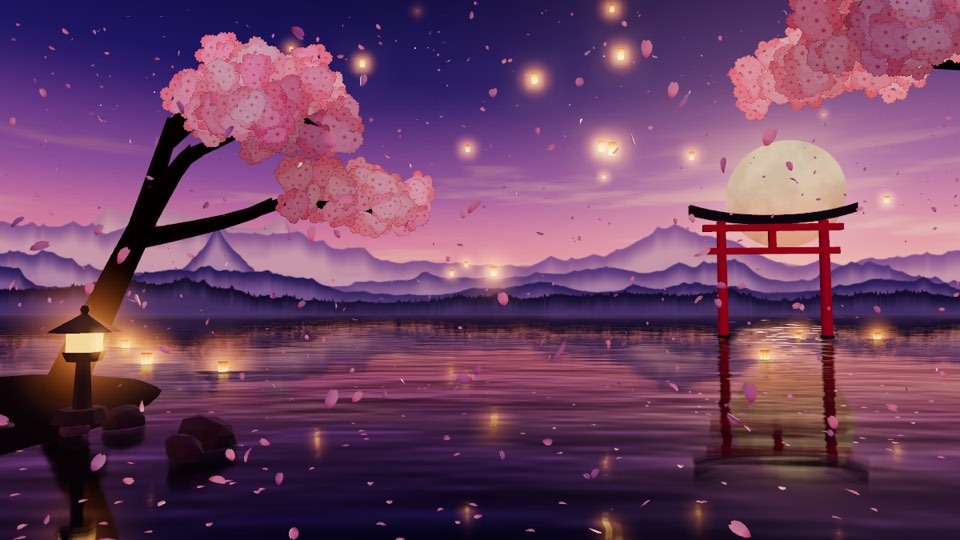
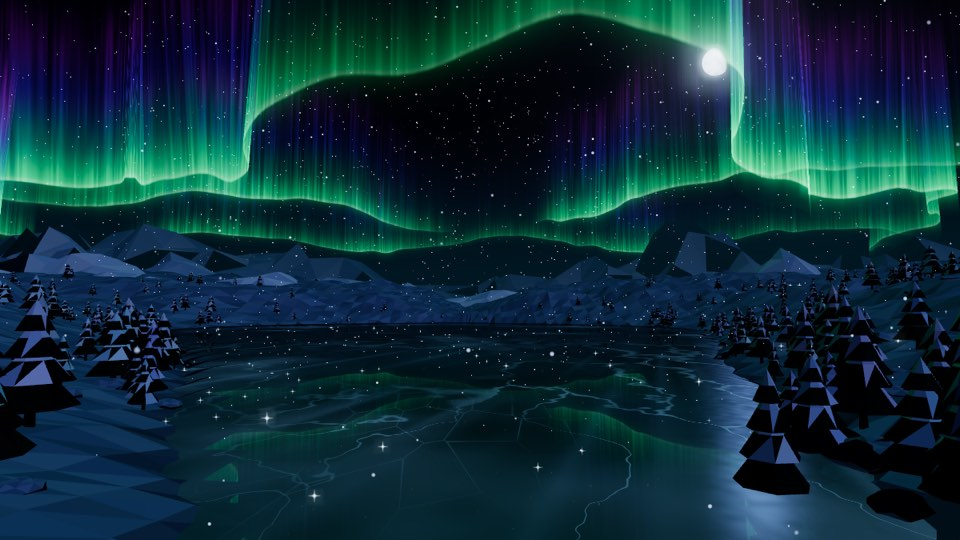

Šest světů, šest soundtracků
Tangletris je 3D logická hra s padajícími kostkami, ve které hraje hudba hlavní roli. Deska se vznáší před živým světem a každý svět má vlastní soundtrack, který se skládá přímo v prohlížeči. Smaž deset řad a cestuješ dál – ze synthwavové dálnice na mořské dno, k jezeru pod sakurami, pod polární záři, do hlubokého vesmíru a nakonec do sopky.
Cesta
V Maratonu tě každý level posune do dalšího světa: na levelu 1 Neon Drive, pak Deep Blue, Sakura, Frost a Starfall, až na levelu 6 Inferno – a od levelu 7 začíná cesta znovu od začátku, jen rychleji. Každý postup o level doprovodí přechod do nového světa i jeho hudby.
- Zůstaň v jednom světě. Klávesou T nebo tlačítkem světa v horní liště přepínáš z Cesty postupně na každý ze šesti světů a zase zpátky. Vybraný svět zůstane, ať vystoupáš jakkoli vysoko.
- Jen se dívej a poslouchej. V režimu Zen není konec hry ani zrychlování – plná deska se prostě smete – takže můžeš ve svém oblíbeném světě zůstat, jak dlouho chceš.
- Světy reagují i na tebe. Když se hromada blíží ke stropu, každý svět znervózní – voda potemní, zvedne se vítr, polární záře se rozžhaví – a do hudby se přidají nervózní bicí.
-

Neon Drive
Level 1, 7, 13…
Nekonečná synthwavová dálnice: pruhované slunce zapadá za drátěné hory, mřížka silnice se řítí proti tobě a kolem sviští neonové sloupy. Silnice i slunce pulzují s každým kopákem, sloupy se rozzáří na virbl a čím je hudba divočejší, tím rychleji jedeš.
Soundtrack: Midnight Overdrive
Synthwave: rozladěné supersaw plochy, pulzující arpeggio, analogový bas a gatovaný virbl. Začíná na 104 BPM · A moll.Paleta:
- Akcent
#22d3ee - Druhý akcent
#f472b6 - Deska
#0c0620
- Akcent
-

Deep Blue
Level 2, 8, 14…
Klidný podmořský svět: světelné paprsky se lámou zčeřenou hladinou, chaluhy se vlní nad prosvícenými dunami, svítící medúzy stoupají mezi proudy bublin a těsně pod hladinou plují velryby. Medúzy pulzují do rytmu a září s akordy – a když se hromada blíží ke stropu, voda potemní a všechny medúzy poplašeně zrůžoví.
Soundtrack: Abyssal Drift
Podvodní downtempo s líným swingem: elektrické piano, hluboký sub bas, bublavé drnkání a velrybí melodie nad metličkami a šejkrem. Začíná na 84 BPM · D, dórský modus.Paleta:
- Akcent
#3ee8f2 - Druhý akcent
#ff8ad8 - Deska
#03122a
- Akcent
-

Sakura
Level 3, 9, 15…
V jezeře za soumraku stojí brána torii pod nízkým měsícem, tušové hory se ztrácejí v mlze, sakury shazují okvětní lístky a k nebi stoupají papírové lampiony. Lístky se třpytí na virbl, lampiony dýchají s kopákem, a když jde do tuhého, zvedne se vítr a hladina se začne čeřit.
Soundtrack: Petals on Still Water
Koto a šakuhači nad bubny taiko v japonské stupnici in, s chrámovými zvonky a gongem místo činelu. Začíná na 92 BPM · D, japonská stupnice in.Paleta:
- Akcent
#ff8fbf - Druhý akcent
#ffbe5c - Deska
#150a1f
- Akcent
-

Frost
Level 4, 10, 16…
Arktická noc: přes oblohu se vlní závěsy polární záře nad zasněženými štíty a zamrzlé jezero to celé zrcadlí mezi břehy s poprášenými smrky. Záře vzplane při změně akordu, sníh se třpytí s činely a na hudební akcenty odpoví padající hvězda – v nebezpečí se světla rozžhaví a sníh začne hnát vítr.
Soundtrack: Northern Lights
Celesta a sbor: formantový sbor, skleněné plochy, arpeggia celesty a harfy a pomalé zvony nad jemným rytmem. Začíná na 80 BPM · C♯ moll.Paleta:
- Akcent
#4ff0b4 - Druhý akcent
#a78bfa - Deska
#051220
- Akcent
-

Starfall
Level 5, 11, 17…
Hluboký vesmír: nad fialovou mlhovinou visí plynný obr s prstenci, kolem krouží jeho měsíce, pomalu proplouvá řeka asteroidů a oblohu křižují padající hvězdy. Planeta pulzuje s kopákem, po prstencích s každým taktem přeběhne světlo, a když hromada roste, řeka asteroidů zrychlí a hvězdy znervózní.
Soundtrack: Orbit of Glass
Kosmický sekvencer v duchu berlínské školy: smyčka syntezátorové sekvence, široké plochy, analogový bas, sbor a vznášející se melodie. Začíná na 98 BPM · E, lydický modus.Paleta:
- Akcent
#a78bfa - Druhý akcent
#fbbf5c - Deska
#070618
- Akcent
-

Inferno
Level 6, 12, 18…
Sopečná výheň na konci výstupu: sopka chrlí v rytmu hudby, po lávovém jezeře plují kry ztuhlé kůry, z čedičového útesu se valí lávopád a valícím se popelem stoupají jiskry. Velké akcenty spustí erupci, lávopád se vzedme s virblem a čím výš je tvoje hromada, tím víc všechno žhne.
Soundtrack: Forge of the Mountain
Frygický industriální metal: zkreslený reese bas, syntezátorové údery, temný sbor, rány do kovadliny a dunivé tomy. Začíná na 128 BPM · E, frygický dominantní modus.Paleta:
- Akcent
#ff6a1a - Druhý akcent
#ffc53d - Deska
#120605
- Akcent
Hudba, která vzniká, zatímco hraješ
V Tangletris není jediný zvukový soubor. Každý nástroj – drnkací struny, elektrické piano, zvony, supersaw plochy, formantový sbor, dechová flétna, analogové basy i celá bicí souprava – se syntetizuje přímo v prohlížeči přes Web Audio API.
Melodie, arpeggia i přechody na bicí se při každém opakování skladby vytvoří znovu a aranžmá prochází intrem, slokou, refrénem i breakdownem, takže soundtrack nikdy nezní dvakrát stejně. Tempo roste s levelem a zvukové efekty hrají v tónině, na akord, který právě zní – a kombo s každým dalším článkem stoupá výš.
Světy poslouchají taky: mřížky, medúzy, lampiony, polární záře i láva pulzují s kopákem a rozzáří se při změně akordu.
Poběží i na mobilu
Světy se kreslí v reálném čase přes WebGL 2 – shadery, instancing a částice, bez jediné textury nebo modelu. Na pomalejších zařízeních hra potichu obětuje vyhlazování, pak rozlišení a nakonec bloom, ponechá jen kroky, které opravdu pomáhají, a jakmile se snímky zase zrychlí, vrátí je zpátky.
Klávesa V vypne náklon a houpání desky; nastavení omezeného pohybu ve tvém zařízení hra respektuje sama. Víc v návodu Jak hrát.
Vydej se na cestu
Šest světů, každý deset řad od sebe. Nebo si pusť Zen a jen se kochej.